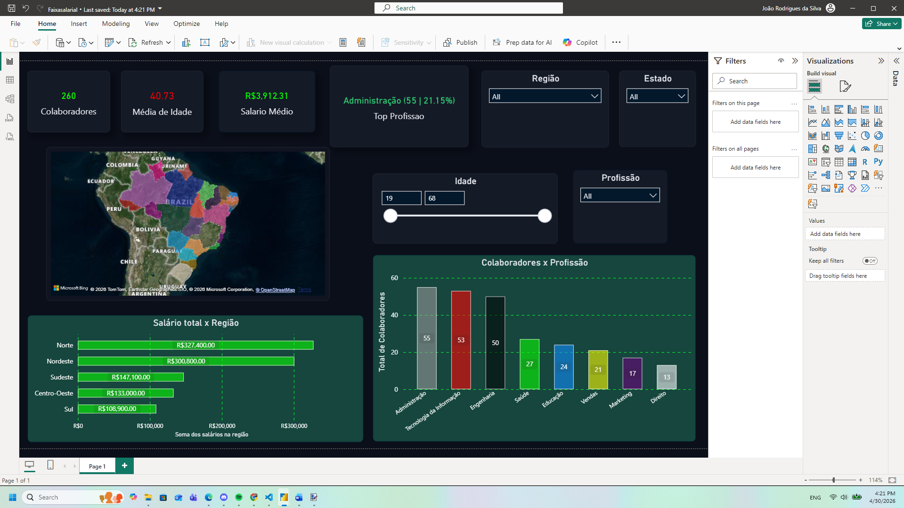

👉 Acessar dashboard interativo no Power BI
Este dashboard apresenta a análise da distribuição salarial e do perfil dos colaboradores, com foco em identificar padrões de remuneração, variações regionais e características demográficas. Através dos indicadores, é possível apoiar decisões estratégicas relacionadas à gestão de pessoas.

A análise integrada entre salário e perfil demográfico permite entender o comportamento da remuneração, identificar diferenças regionais e apoiar decisões mais assertivas na gestão de pessoas.